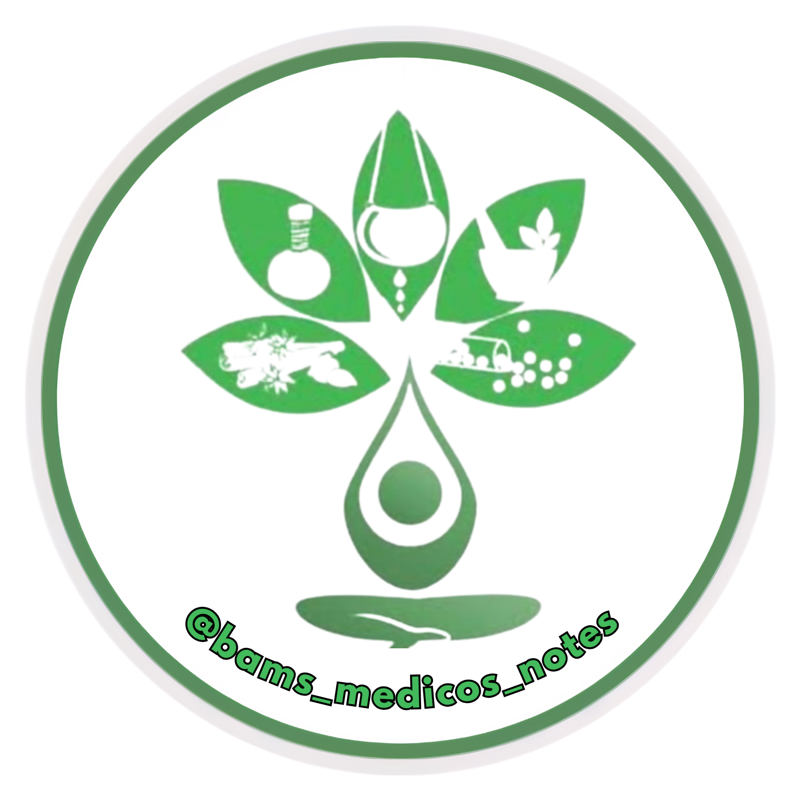

Notes by Kiran Kendre
Padartha Vigyan
Samskritam evam Ayurved Itihas
Kriya Sharira
Rachana Sharira
Samhita Adhyayan – 1
Dravyaguna Vigyan
Rasashastra evam Bhaishajya Kalpana
Roga Nidan evam Vikriti Vigyan
Agad Tantra evam Vidhi Vaidyaka
Swasthavritta evam Yoga
Samhita Adhyayan – 2
Kayachikitsa
Panchakarma & Upakarma
Shalya Tantra
Shalakya Tantra
Prasuti Tantra evam Stree Roga
Kaumarabhritya
Samhita Adhyayan – 3
Atyaikachikitsa
Research Methodology & Medical Statistics